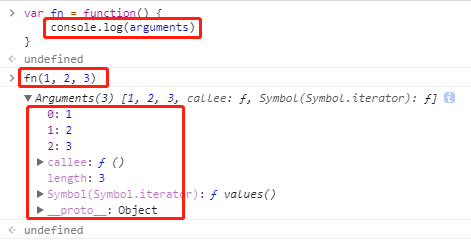

JS 中的数组到底是什么？
JS 中的数组其实就是一种特殊的对象。
typeof [1, 2, 3] // "object"
它和狭义上的对象的本质区别就是，键名是按次序排列的一组整数（0，1，2 …），且继承了 Array.prototype 属性，可以调用一系列 Array 提供的方法。
伪数组
如果一个对象的所有键名是按次序排列的一组整数（0，1，2 …），含有 length 属性且没有继承 Array.prototype 属性，不具备数组特有的方法，那么这个对象就是伪数组。语法上称为“类似数组的对象”。
例如函数的 arguments 对象就是一个伪数组：

以及大多数 DOM 返回的元素集也是伪数组。
数组的常用方法
静态方法
- Array.isArray()
该方法返回一个布尔值，表示传入的参数是否为数组。可以弥补 typeof 运算符的不足。
var arr = [1, 2, 3]
typeof arr // "object"
Array.isArray(arr) // true
实例方法
- Array.prototype.sort()
使用该方法原数组将被改变。
sort() 方法对数组成员进行排序，默认是按照字典顺序排序(不是大小顺序)。
如果需要按照自定义顺序排序，需要传入一个函数参数，参数函数可以接受两个参数，表示进行比较的两个数组元素。如果该函数的返回值大于0，表示第一个元素排在第二个元素后面；其他情况下，都是第一个元素排在第二个元素前面。
['d', 'c', 'b', 'a'].sort() // ['a', 'b', 'c', 'd']
[4, 3, 2, 1].sort() // [1, 2, 3, 4]
[11, 101].sort() // [101, 11]
// 按照分数从高到低排序
var arr = [
{ name: '小光', score: 98 },
{ name: '小张', score: 100 },
{ name: '小毕', score: 96 }
]
arr.sort(function(a, b) {
return b.score - a.score
})
arr
// [
// { name: '小张', score: 100 },
// { name: '小光', score: 98 },
// { name: '小毕', score: 96 }
// ]
- Array.prototype.filter()
filter() 方法用于过滤数组元素。它接受一个函数参数，参数函数可以接受三个参数：当前元素，当前位置和整个数组。所有数组元素依次执行该函数，返回结果为 true 的元素组成一个新数组。
// 筛选出所有偶数
var arr = [1, 2, 3, 4, 5, 6, 7, 8, 9, 10]
arr.filter(function(n) {
return n % 2 === 0
}) // [2, 4, 6, 8, 10]
- Array.prototype.forEach()
该方法不返回值，只用来操作原数组，且可以改变原数组。
forEach() 方法对数组的所有元素依次执行参数函数，参数函数可以接受三个参数：当前元素、当前位置、数组本身。
var arr = [
{ name: '小光', score: 98 },
{ name: '小张', score: 100 },
{ name: '小毕', score: 96 }
]
arr.forEach(function(element, index) {
console.log('[' + index + '] ' + element.name + ': ' + element.score)
})
// [0] 小光: 98
// [1] 小张: 100
// [2] 小毕: 96
- Array.prototype.map()
该方法有返回值。如果遍历数组是为了得到返回值，那么使用 map，否则使用 forEach。
map() 方法与 forEach() 方法很相似，也是对数组的所有元素依次执行参数函数，参数函数同样接受三个参数：当前元素、当前位置、数组本身。然后把执行结果组成一个新数组返回，不改变原数组。
var arr = [1, 2, 3, 4]
arr.map(function(n) {
return n * 2
}) // [2, 4, 6, 8]
- Array.prototype.reduce()
reduce() 方法依次处理数组的每个元素，最终累计为一个值。
// 所有元素求和
var arr = [1, 2, 3, 4]
arr.reduce(function(a, b) {
return a + b
}) // 10
- 用
reduce()实现filter()
// 筛选出所有偶数
var arr = [1, 2, 3, 4, 5, 6, 7, 8, 9, 10]
arr.reduce(function(arr, n) {
if(n % 2 ===0) {
arr.push(n)
}
return arr
}, []) // [2, 4, 6, 8, 10]
- 用
reduce()实现map()
// 所有元素乘以 2
var arr = [1, 2, 3, 4]
arr.reduce(function(arr, n) {
arr.push(n * 2)
return arr
}, []) // [2, 4, 6, 8]